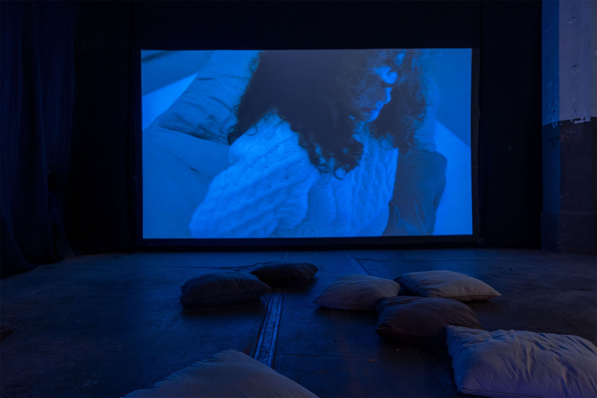
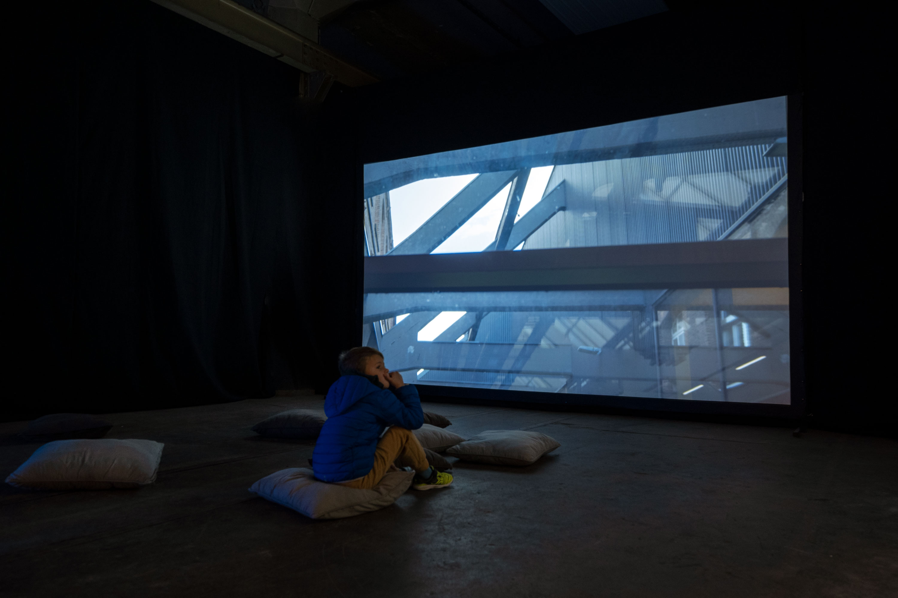
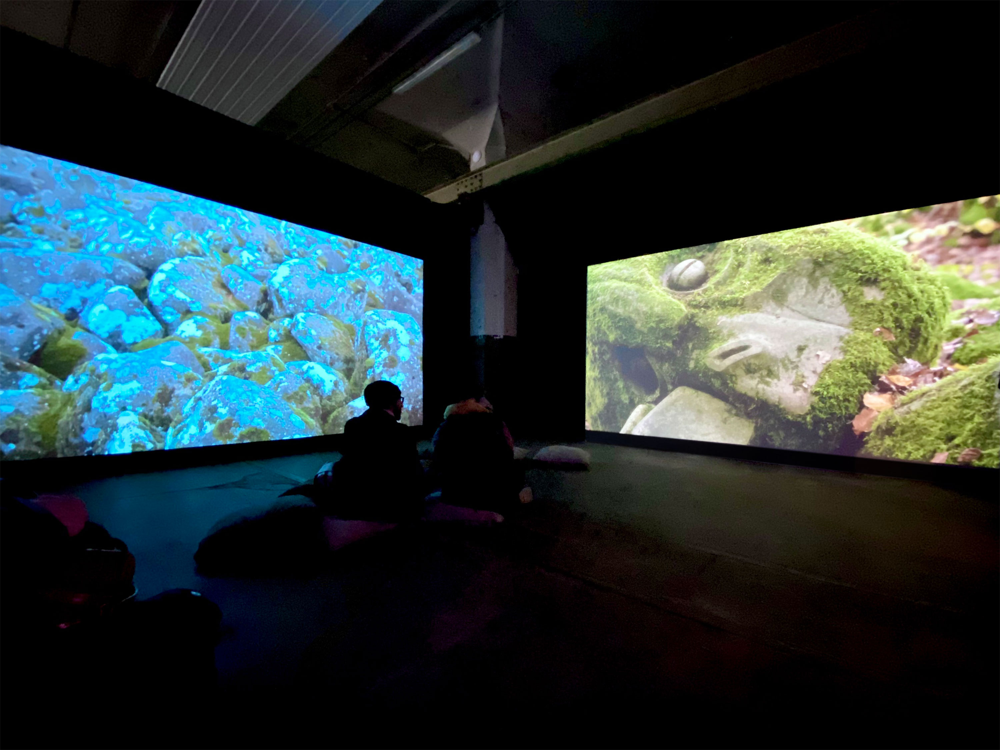

Jessica Arseneau

Solar, 2022
Video HD, audio stereo
15:43 min.
Video still frame
Solar is inspired by J.G. Ballard's science fiction novel The Day of Forever (1966), in which the sun would have remained stationary in the sky at dusk for an indefinite period of time. This permanent sunlight transforms, among other things, people's sleep. Expanding the reflection, the film transports us in a constructed space, dedicated to the simulation of dreams, in a stone field and in the contemplation of lichens. Solar is presented as a daydream, devoid of any real action, and it is a prolonged interlude that takes place while a poem by Emily Dickinson is recited among others. Images slowly scroll across the screen, activating the natural and architectural elements of each location as if they were the protagonists in a world where time is inevitably present.
Performers: Kiki DeGonzag, Aurélien Finance
Project assistant: Laura Haby
Camera: Jessica Arseneau, Laura Haby
Audio recording: Luna Baby
Audio sources: BBC Library, waveplaySFX de Freesound.org
Quote: Emily Dickinson, The Sun kept setting — setting — still (publié en 1890)
Special thanks: Marie Paule Bilger, Jean-Jacques Delattre, Emmanuel Henninger, Jeremy Ledda, Florent Rusch, KM0, La Ferme Aventure, Motoco, Kunsthalle Mulhouse, Goethe-Institut Strasbourg





Views of exhibition Soleil immobile, Motoco, Mulhouse
This project was created during the residency ALLEZ & ZURÜCK of the Goethe-Institut Strasbourg, in collaboration with Kunsthalle Mulhouse, Motoco, Goethe-Institut Nancy, the Bureau des arts plastiques and supported by OFAJ DFJW, DRAC Grand Est and Centre Français de Berlin.
This project is supported by ArtsNB.